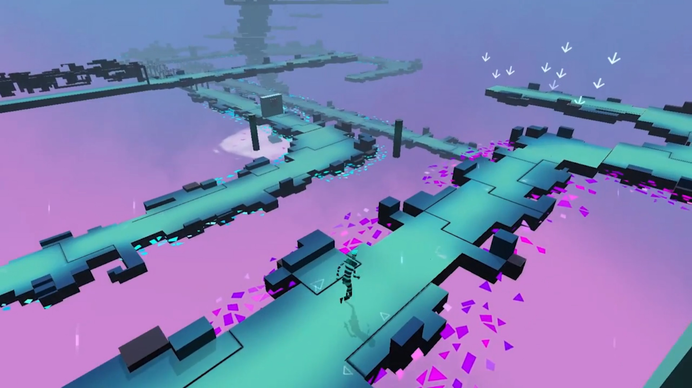
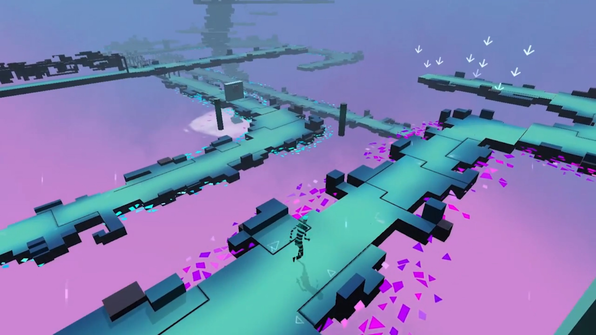

Gemini
Specifications
- Genre: 2-player co-op endless runner platformer | Puzzle
- Platform(s): Mobile & PC (VR)
- Engine: Unity
- Team size: 6
- Vadim Nickel (Team Lead | Programming | Sound Design)
- Philipp Baumann (3D Art | Animation)
- Anna Rosenkranz (2D Art | Concept Art)
- Alicja Ossowski (3D Art | Animation)
- Omar Ruiz (Game Design | Puzzle Design)
- Sarah Abouzari (Programming)
- Production time: 7 weeks
- Type: School Project
- Assigned Methodology/Approach: Mixed Realities
- Project page: Here
Notable technologies/tools used
- Marmoset Hexels for level design mock ups
- Trello for project management
- MindMup for storyboarding
Role(s) and responsibilities
- Conceptualization of the initial ideal and translating it into gameplay
- Created puzzle and level designs
- Built these designs in-engine using assets made by the art team
Description
Gemini is a 2-player co-op endless runner platformer game in which both players have to work together solving puzzles by using different controls/peripherals. Each player will experience the game from a different perspectives (one through the means of a VR headset and the other by using touch controls on a mobile device).
Conceptualization
From the beginning of the project, the core idea behind Gemini was to create a two-player cooperative puzzle experience that was as accessible and simple as possible, to reach to a greater audience. In order to accomplish this goal, it was decided to have one player using a VR cardboard headset; and the other, tablet/phone/mobile touch controls.
The core concept of the game revolves around identity; not in the traditional definition of a set of characteristics that define oneself, but more in a logic / mathematical sense, in which an assertion for two terms / values, refers to the same thing. This dichotomy (whole /fragmented) is used and extrapolated into both, the formalistic (gameplay) and visual aesthetics' discourses of the game. In the former, with the core cooperative gameplay needing two different players in separate formats / screens / perspectives (VR and Mobile). In the latter, by potraying the story of an undefined/ambiguos playable character, separated into two different personas /avatars.
Furthermore, this dual/double discourse is reinforced by having two different set of puzzles: platforming puzzles for the player with mobile controls and thinking/mind puzzles for the player with the VR headset
Gameplay and controls
Since one of the most fundamental problems with Cardboard VR is the lack of inputs as controls through buttons (and the use of additional peripherals was definitively out of the questions due to the accessibility scope), I was greatly concerned that the role of the VR player would be too passive in comparison to the number of tasks/actions/inputs performed by the mobile Player.
From a game design perspective, it was crucial to balance the problem of “workload” out between the two players, so both would feel equally important to the solution of the puzzles/game. In order to do so, the VR Player needed to have an equal number of actions/inputs as the mobile player.
With this in mind, controls/inputs for both players were set as follows:
VR player (First Person view)
Y-Axis
-Speed up: Move head up
-Speed down: Move head down
X-Axis
-Fixate the camera to a certain point in the sideways of the path to activate/trigger events on the mobile player's map.
Mobile Player (Isometric view)
-Tap (Make the VR player jump)
-Swipe screen (Make the VR player slide)
-Slide/touch objects (Move platforms, activate triggers, rotate tiles, etc.)
These controls not only gave equal involvement and participation from both players, but they were the basis for creating more timing, speed management, platforming and fast reactions based puzzles for the mobile player; and offered a slow-paced, thinking / reasoning-approach to the one using the VR headset.
 



.png)
Level design
While both players basically play the same level (as the map is replicated in both screens), not everything is entirely disclosed/displayed equally.
This intentionally encourages full cooperation as all the puzzles (no matter the type) cannot be completed/solved by only one of the players
For instance, in the level-based puzzles, holes could potentially be in the path ahead that can only be seen by the VR player, so they would need to instruct the mobile player when to tap for jumping or swipe for sliding under a door that is partially closed. Conversely, the mobile player could see where the switches and doors are in the isometric map, and how many seconds are left for them to close/open, so they would need to instruct the VR player when to speed up/speed down.
Level creation philosophy/considerations
-Short and fast. No longer than 10-15 min per level (In the end, its played in VR and mobile)
-With the same amount of puzzles for both players
-Not a lot of verticality to avoid motion sickness for the VR player
-Fast-paced platforming sections followed by slow-paced thinking/rational puzles to give both players a steady flow of gameplay without being too overwhelming and with enough moments to compose themselves
-Variation in mechanics. Alternate between jumps, slides, object interactions, etc.
Puzzle design
Revealing only certain elements to an specific player is a mechanic that not only was prevalent during levels, but it´s also incorporated inside the puzzles.
Here are some of the walkthroughs/examples of the slow-paced thinking puzzles I designed, showing how players needed to cooperate in order to solve them:
Puzzle 1
Puzzle 2